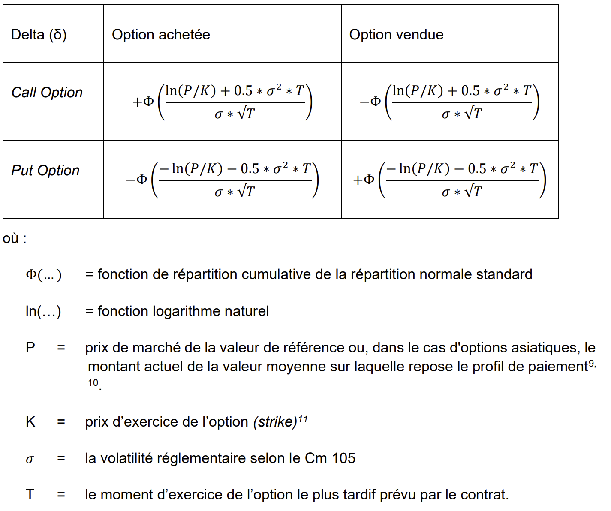

Standardised Approach for Counterparty Credit Risk (SA-CCR)
Used in the following modules
- CRE
Legal references
- Finma circ. 2017/07 cm 32-122
- OFR Art. 57
- Basel Framework: CRE52
- bcbs 279
Description
- The exposure at default (EAD) is computed at the netting set level
- Transactions not subject to a netting agreement are interpreted as being a netting set on their own.
- Recognized netting agreements are close-out netting and netting by novation (
core_positions.NettingAgreementType not in ('CN','NbN')). If these conditions are met, transactions are grouped together in a netting agreement using the fieldcore_positions.NettingSetId. Otherwise, for positions outside netting sets, the position IDcore_positions.Idcan be used as the netting set ID.
- Formula: , where:
- alpha = 1.4
- RC = replacement cost
- Distinction between marigined and unmargined netting set:
- A netting set is considered margined if all positions in the netting set have a non-empty field
core_positions.MarginAgreementId.
- A netting set is considered margined if all positions in the netting set have a non-empty field
- Treatment for unmargined netting set.
-
, where:
- V = sum of replacement value (
core_derivatives_calc.ReplacementValue) of the derivatives in the netting set. - C = net collateral amount held (after haircut), allocated to that netting set, i.e. → documented below.
- V = sum of replacement value (
-
, where:
- Treatment for margined transactions
-
- V and C: see definitions above
- TH, MTA and NICA (largest exposure that would not trigger a variation margin call):
list_margin_agreements.TH, list_margin_agreements.MTA, list_margin_agreements.NICA→ TBD: should NICA be treated like that, i.e. just a value in an input field?
-
- Distinction between marigined and unmargined netting set:
-
, where:
-
- The multiplier ranges from its floor of 5% and 1. When over-collateralized (), the multiplier will decrease exponentially toward 5%. For under-collateralized netting set, the multiplier is 1 and
-
, where:
- The assignment of a transaction to its asset class can be done with the field
core_derivatives_calc.AssetClass -
, where a hedging set is a group of positions within an asset class, where the grouping criteria depends on the the asset class:
- Interest rate: same currency →
core_derivatives.UnderlyingCurrency, core_derivatives.RCurrency- Within each hedging set, positions are further grouped by maturity bucket (
core_positions.MaturityDate). Within each maturity bucket, a full offsetting of trade level exposures (SEN) is allowed:- Lest than a year →
- Between 1 and 5 years →
- More than 5 years →
- Within each hedging set, positions are further grouped by maturity bucket (
- FX: same currency pair →
core_derivatives.UnderlyingCurrency - core_derivatives.QuoteCurrencyandcore_derivatives_swaps.RCurrency - core_derivatives_swaps.PCurrency. Order by alphabetical orders the currencies in the pair, to avoid counting twice the same currency pair. - Credit: all positions are in the same hedging set
- Within each hedging set, positions are further grouped by reference entity (
core_derivatives.UnderlyingReferenceEntityId). For each reference entity , a full offsetting of trade level exposures (SEN) is allowed (). -
- is defined under Finma circ. 2017/07 cm 105.
- Within each hedging set, positions are further grouped by reference entity (
- Equity: all positions are in the same hedging set
- Within each hedging set, positions are further grouped by issuer (entity) (
core_derivatives.UnderlyingIssuerId). For each issuer , a full offsetting of trade level exposures (SEN) is allowed (). -
- is defined under Finma circ. 2017/07 cm 105.
- Within each hedging set, positions are further grouped by issuer (entity) (
- Commodity:
- Positions are categorized into 4 hedging sets corresponding to groups of commodity:
- Energy →
list_commodities.TypeOf in ('CO','Coal','El','GC','LC','NG') - Metals →
list_commodities.TypeOf in ('Gold','NPM','PM') - Agricultural →
list_commodities.TypeOf in ('GO','LD','SOA') - Other commodities →
list_commodities.TypeOf in ('Freight','Other')
- Energy →
- Within each hedging set, positions are further grouped by type of commodity (
core_derivatives.UnderlyingCommodityId). For each type , a full offsetting of trade level exposures (SEN) is allowed (). -
- is defined under Finma circ. 2017/07 cm 105.
- Positions are categorized into 4 hedging sets corresponding to groups of commodity:
- Interest rate: same currency →
- Trade level exposure: Scaled Effective Notional (SEN)
-
, where:
-
, where :
-
:
- For FX derivatives (
core_derivatives_calc.AssetClass = 'FX') → notional value of the foreign currency leg converted in functional currency. If both legs in foreign currency, take the highest one (core_derivatives_calc.RCurrency, core_derivatives_calc.PCurrency, core_derivatives_calc.RAmount,core_derivatives_calc.PAmount)- TBD: add fields RCurrency and PCurrency in core_derivatives_calc, and define calculation of fields RAmount and PAmount if not delivered
- Short term solution:
core_positions.Notional
- For equity and commodity derivatives (
core_derlivatives_calc.AssetClass in ('Eq','Co')) → spot value of the underlying (core_positions.Notional)- TBD: compute it using spot price, multiplier and number of components.
- For interest rate and credit derivatives (
core_derivatives_calc.AssetClass in ('IR','Cr')) → , where:-
=
core_positions.Notional -
, where:
-
= period of time in years, until the start of the time period of reference:
core_positions.StartDateReferencePeriod(CRE52.31) -
= period of time in years, until the end of the time period of reference:
core_positions.EndDateReferencePeriod(CRE52.31)
-
= period of time in years, until the start of the time period of reference:
-
=
- For FX derivatives (
-
- Treatment for unmargined netting set (CRE52.48).
-
, where:
-
core_positions_calc.ResidualDurationDays→ 14 because 10 business days + 2 weekend days.
-
-
, where:
- Treatment for margined netting set.
-
, where:
-
, where:
-
equals 10 if not centrally cleared transactions or 5 if centrally cleared (
list_counterparties.TypeOf in ('CCP1','CCP2','QCCP')) -
equals the re-margining period in days
- 1 if daily re-margining (
list_margin_agreements.RevaluationFrequency = 'D') - 5 if weekly re-margining (
list_margin_agreements.RevaluationFrequency = 'W')
- 1 if daily re-margining (
- Computed at netting set level (CRE52.50 / Fimna circ. 2017/07 cm 116-119)
-
equals 10 if not centrally cleared transactions or 5 if centrally cleared (
- 250 because in business days (unlike for unmargined netting sets which uses 365 days)
-
, where:
-
, where:
- Treatment for unmargined netting set (CRE52.48).
-
- Not options (CRE52.39):
- Not swaps:
if core_positions.LongContractFlag = 1 then 1 else -1
- Swaps: TBD
- Not swaps:
- Options (CRE52.40):
- 
- The cumulative distribution function is approximated using this formula (Aludaat and Alodat (2008)):
- Not options (CRE52.39):
-
:
-
, where :
- → computed according to the Finma circ. 2017/07 cm 105.
-
, where:
- The assignment of a transaction to its asset class can be done with the field
-
- C = net collateral amount held (after haircut) = sum of received collateral - sum of paid collateral → can be positive or negative.
- The allocation of collateral to netting agreement in the SA-CCR is out of the scope of the regular CRM.
-
Distribution of collaterals to netting sets
-
Received collateral:
- The legal texts do not provide guidelines on how to distribute collaterals to netting sets.
- Suggested simple strategy to distribute received collateral to netting sets:
- Complete the regular capital adequacy CRM
- For any given counterparty which (a) trades derivatives and (b) still has unused collateral after the CRM: distribute the remaining collateral to each netting sets.
- The simplest strategy is to distribute the collateral to each netting set proportionally to the sum of an input field, such as the sum of the notional in the netting set (
core_positions.Notional). - A more sophisticated approach could be a distribution proportional to the (
tmp_cre_saccr_netting_set_level.AddOnAggregate). This involves computing it first, before going forward with the rest of the EAD calculation.
- The simplest strategy is to distribute the collateral to each netting set proportionally to the sum of an input field, such as the sum of the notional in the netting set (
- Adjusted haircut:
- As for collateral entering the CRM, collateral entering the SA-CCR calculation needs to be adapted: , where is the regulatory haircut defined under Finma circ. cm 209 and equals 10 business days.
- The adaptation will vary depending if there is a margin agreement in place or not
- Without margin agreement
- (Finma circ. 2017/7 cm 110)
- This means the haircut will be increased by . It can lead to haircut that are higher than 100%, in which case the collateral value should be 0 (and not negative).
- With margin agreement
- Without margin agreement
- As the notion of margin agreement won't be defined at the collateral level (only for margin accounts) or netting set level, but rather at the derivative/transaction level, I suggest the following logic to decide on which adaptation to apply:
- Look at the MPOR (margin period of risk) of all derivatives in a netting set which is calculated in
core_derivatives_calc_lc.MPOR:- If one of the MPOR of the netting set = 0 (no margin agreement) set to 250 as described above
- Otherwise, take the max value of MPOR.
- Note: this is a simplification. A more sophisticated method could be to look at the margin agreement information of all collaterals, and compute a corresponding MPOR if applicable.
- Look at the MPOR (margin period of risk) of all derivatives in a netting set which is calculated in
-
Posted collateral:
- So far, we will only cover margin accounts as posted collaterals, which can be recognized as:
core_positions_calc.AccountGroupLevel1 in ('DueFromBanks','DueFromCustomer') and core_positions.SubType = 'LDasGuarantee' - This positions increase the EAD, so to avoid double-counting, their exposure should be set to 0 (
core_positions_calc.CAExposureand/orcore_positions__calc.LEXExposure). Consequently, they should also not enter the CRM (setcore_positions_calc.CAExposureFlag = 0?). - Simplification: so far, haircuts are not applied on posted collaterals
- The distribution to netting agreement is done in the same way as for collateral received.
- So far, we will only cover margin accounts as posted collaterals, which can be recognized as:
-
Not covered yet:
- Basis transactions
- CDO tranches
- Volatility derivatives
Some definitions
- Independant collateral amount (ICA) = (i) collateral (other than VM) posted by the counterparty that the bank may seize upon default of the counterparty, the amount of which does not change in response to the value of the transactions it secures and/or (ii) the Independent Amount (IA) parameter as defined in standard industry documentation. ICA can change in response to factors such as the value of the collateral or a change in the number of transactions in the netting set. (CRE52.16)
- Net independent collateral amount (NICA) = Because both a bank and its counterparty may be required to post ICA, it is necessary to introduce a companion term, net independent collateral amount (NICA), to describe the amount of collateral that a bank may use to offset its exposure on the default of the counterparty. NICA does not include collateral that a bank has posted to a segregated, bankruptcy remote account, which presumably would be returned upon the bankruptcy of the counterparty. That is, NICA represents any collateral (segregated or unsegregated) posted by the counterparty less the unsegregated collateral posted by the bank. With respect to IA, NICA takes into account the differential of IA required for the bank minus IA required for the counterparty. (CRE52.17)
- Holding period = The period of time over which exposure or collateral values are assumed to move before the bank can close out the transaction. (CRE22.41)
- Margin period of risk = Margin period of risk is the time period from the last exchange of collateral covering a netting set of transactions with a defaulting counterparty until that counterparty is closed out and the resulting market risk is re-hedged. (CRE50.19)
- Re-margining period =
Some concepts/precisions
- A derivative outside a netting agreement will consist of a netting set on its own.
- The netting agreement sets the rules for the exchange of a net amount for positions within the agreement in case a counterparty defaults.
- If margin calls are exchanged along the life of the contracts, the margin agreement sets amongst other things the remargining frequency. It will impact the margin period of risk (MPOR) which in turn impact the maturity factor (MF). It is expected that the margin agreement and netting agreement are aligned: in essence, one remargining frequency in a netting set. The case where the margin and netting set do not match described in cm 40 is not supported.
Output tables/fields
v_cre_saccr_netting_set_level
- Id → Netting set id
- NettingAgreementFlag → 1 if recognized netting agreement in place
- EAD
- RC
- PFE
- Multiplier
- AddOnAggregate
v_cre_saccr_fx_hedging_set_level
- Id → Hedging set id (currency pair)
- NettingAgreementId
- AddOnHedgingSet
v_cre_saccr_eq_hedging_set_level
- Id → Hedging set id (issuer)
- NettingAgreementId
- AddOnHedgingSet
v_cre_saccr_eq_sub_hedging_set_level
- Id → Sub hedging set id (issuer)
- NettingAgreementId
- AddOnSubHedgingSet
- Rho
v_cre_saccr_co_sub_hedging_set_level
- Id → Sub Hedging set id (commodity type)
- HedgingSetId
- NettingAgreementId
- AddOnSubHedgingSet
- Rho
v_cre_saccr_ir_hedging_set_level
- Id → Hedging set id (currency)
- NettingAgreementId
- AddOnHedgingSet
- DB1
- DB2
- DB3
v_cre_saccr_cr_hedging_set_level
- Id → EQ or CR
- NettingAgreementId
- AddOnHedgingSet
v_cre_saccr_co_hedging_set_level
- Id → Hedging set id (commodity group)
- NettingAgreementId
- AddOnHedgingSet
v_cre_saccr_cr_sub_hedging_set_level
- Id → Sub hedging set id (reference entity)
- NettingAgreementId
- AddOnSubHedgingSet
- Rho
core_derivatives_calc
- Computed in rules:
- NettingSetId
- SF
- SupervisoryVolatility
- SupervisoryRho
- Computed in views:
- SubHedgingSetId
- HedgingSetId
- EffectiveNotional
- AdjustedNotional
- MF
- MPOR
- SupervisoryDelta
- SD
- SEN = trader level exposure